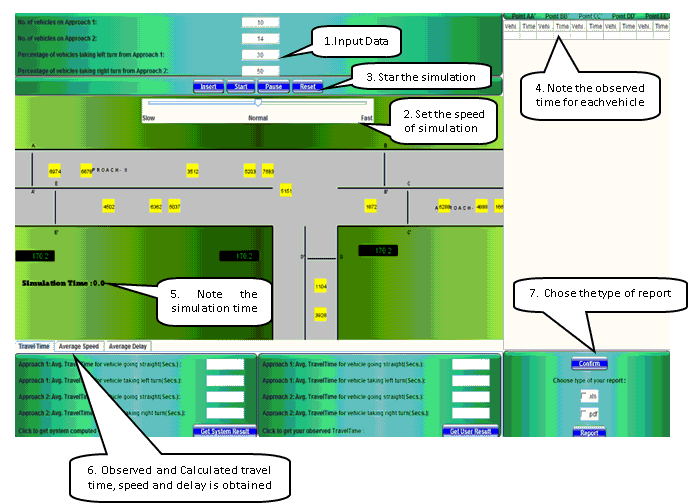
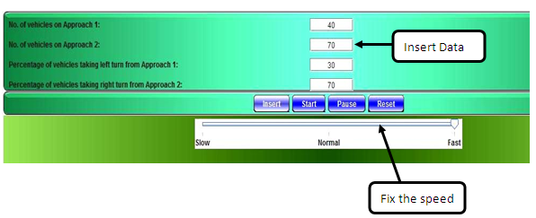
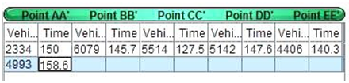
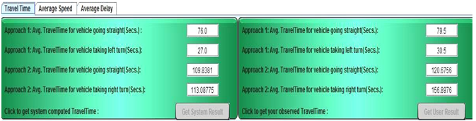
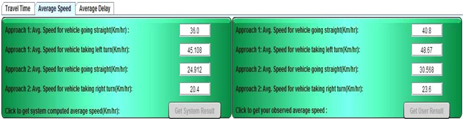
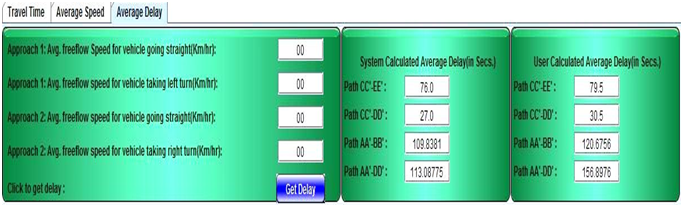

To determine average travel time, average speed and also the amount of delay caused on a given route.
Objectives

Volume, Speed and Delay Study at Intersection
About the experiment
A travel time study determines the average time required and also the amount of delay caused on a given route. Delay is the extra time spent by drivers against their expectation. Data obtained from travel time and delay studies give a good indication of the level of service on the study section. These data aids the traffic engineer in identifying locations like presence of intersections, which may require special attention in order to improve the overall flow of traffic on the route.
There can be different forms of delay depending on location:
There are several methods to conduct travel time and delay studies, namely:
In this experiment we will be using the Licence-plate approach for calculating the travel time and delay is one of the most common methods.
License-plate approach
The License-plate approach requires following set up and procedure to be followed :
Thus,
Travel time = Time recorded at the end of section - Time recorded at the begining of the section
Average travel time = (Sum of all travel time)/(Number of matched license plates)
Delay time = Observed travel time - Free flow travel time
Average delay time = (Sum of all delay time)/(Number of matched license plates)

The Image below represents a T intersection where we have to observe the Volume, Speed and Delay of the vehicles and cross check with the calculated value.
 Step 1 :Enter the number of vehicles and percentage of the vehicle taking turn at the T intersection. Adjust the simulation time as required and then click the insert option before starting the simulation. The Simulation can be paused by clicking on the pause option while observing vehicle movement during simulation The data can be reset with the help of reset option. :  Step 2 :

As the vehicles move note down the vehicle id number at each cross section AA', BB', CC', DD', EE' in the section given below

After all the observations are noted click on the confirm option, select the type of report format and then click on the report option.
Step 3 :
Get calculated and user calculated Travel Time , Average Speed and Average Delay after the simulation is done
Travel Time

Average Speed

Average Delay
